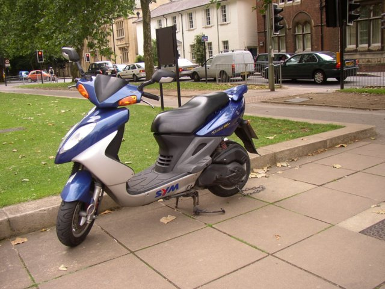
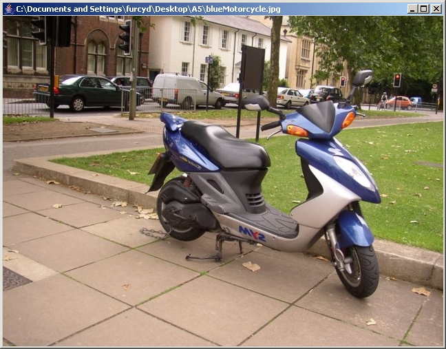
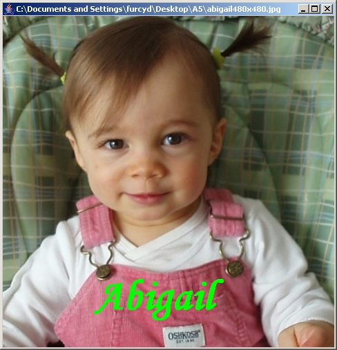
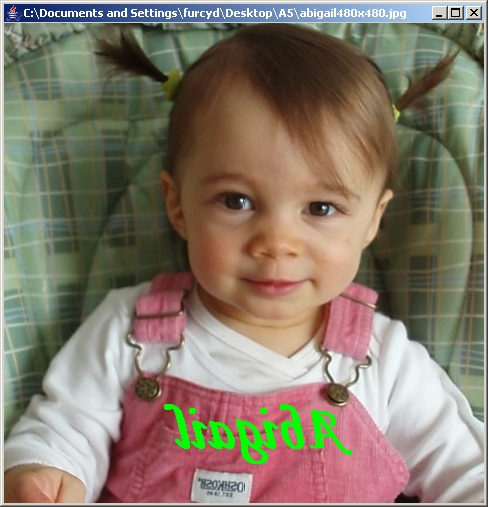

CS 262 - Fall 2020 -
Assignment #1
Part 7: Vertical flip
Back to the main assignment page
In this part of the assignment, you must transform the original
picture in the following way: Imagine the picture is drawn on a piece
of transparent glass, which is laying face up on the table in front of
you. Pick up the piece of glass and flip it over from side to side,
that is, its top and bottom are not swapped. The picture you see when
you put the glass face down is the picture your verticalFlip()
method should produce.
For example, calling your method on this picture:

should produce the following picture:

Another way to look at this transformation is to imagine looking at a
store window from the outside and then stepping inside and looking at
the same window from the other side. This effect may be easier to
visualize with written text, as in the following
transformation:


Back
to the main assignment page